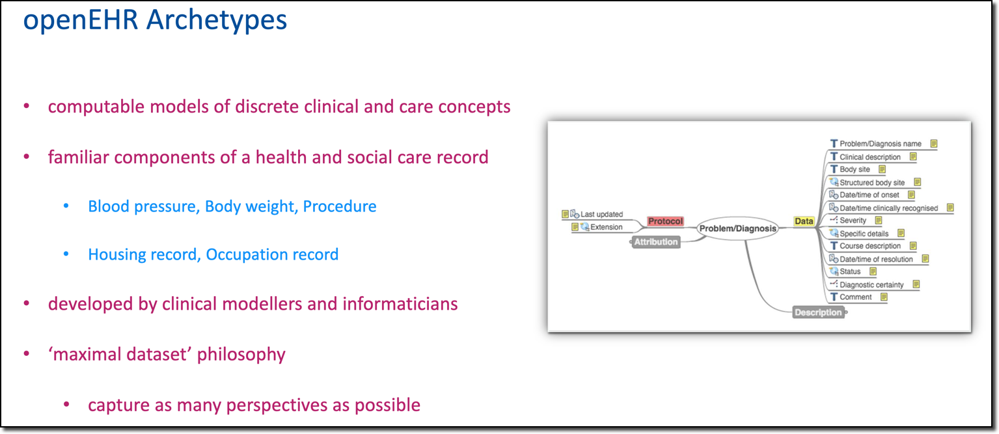

Pharmacogenetics (PGx) archetype reviews
Introduction
This project aims to build and publish a number of openEHR archetypes and templates which relate to Pharmacogenetics, to support decision support in frontline clinical systems.
The Pharmacogenetics Data Modelling - A Step Towards Personalised Prescribing page will give you some detailed information on the project and the challenges of representing PGx data in a patient record, to support clinical decision-making.
Introduction to openEHR and archetype reviews
If you are not familiar with openEHR, this short intro may be helpful - watch until about 15m 20s.
Archetypes are definitions of components of information to be stored in a healthcare record or application. For example how to record a blood pressure, or a diagnosis, or a specific PROM like EQ-5D.

The non-profit openEHR community works directly with clinicians and other health and care professionals to define and then freely share the archetypes and templates, using tools that non-engineers can use to create and review the archetypes.

Reviewing archetypes
Building archetypes is normally done by clinical informatics but they need to be reviewed by specialists in the subject, in this case people with a knowledge of Pharmacogenetics.
We use a special tool called 'Clinical Knowledge Manager' for this purpose, inviting people to review the archetype on-line.
The CKM tool we are initially using for this project is hosted by Apperta on behalf of openEHR UK, specifically for UK-based projects.
You will receive a specific email invitation to participate as a reviewer. There is absolutely no cost and we promise not to hassle you with too many reminders - you can opt out at any point.
The process is straightforward but you might find it helpful to watch this Video walk-through of what is involved.
This Reviewing archetypes page might also be helpful.
When reviewing archetypes, remember that these are not 'forms' as such - they are definitions of the information that sits beneath, so don't worry about the exact appearance.